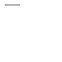

bezier()
Syntax
path = bezier(points=[], curvature=1.0, **opts)
with bezier(x=0, y=0, **opts) as path: # call moveto(), lineto(), or curveto() to add points to the path
Description
The bezier() command allows the creation of custom shapes. The x &
y parameters set the location of the first point (origin) in the path. These
parameters are optional. When not supplied, a starting location for the path should be
given inside the with block using the moveto() command.
Inside the with block, a series of other path commands usually follow,
for example moveto(), lineto(),
or curveto(). At the end of the block the path is drawn
if the draw parameter has not been set to False. Otherwise you
can use the variable captured in the as clause of the with
statement once the block is complete.
Optional Parameters
draw
By default, paths are drawn as soon as the with block completes (or when
bezier() returns if a points parameter was passed). By setting
draw=False, the path will be returned but not drawn. You can then draw it
manually by calling path.draw() on the returned BezierPath object.
close
If True, connect the final point in the path back to the starting position
after the final drawing command. If omitted, it defaults to True (or inherits
the value from the last call to autoclosepath()).
fill /
stroke /
strokewidth
Values passed to these parameters will override the state set in previous calls to the
corrseponding fill(), stroke(), and strokewidth() commands. If omitted, the path will inherit
values from the global state when drawn.
capstyle
Set the shape of the path’s endpoints to BUTT, ROUND or SQUARE. If omitted, the style defaults to
BUTT (or inherits the value from last call to capstyle()).
joinstyle
Set the shape of the path’s vertices to MITER, ROUND or BEVEL. If omitted, the style defaults to
MITER (or inherits the value from the last call to joinstyle()).
curvature
When bezier() is called with a list of more than three (x,y) tuples as
points, the curvature parameter offers some control on how
smoothly separate segments are stitched together: from straight lines (0.0) to
smooth curves (1.0). If omitted, curvature defaults to 1.0.
Tutorial
Examples
|  |
# define a path inside of a 'with' block with bezier(10, 10, stroke=0.2) as path: lineto(40, 10) |

|
# define a path with a list of x,y points points = [(10, 10), (90, 90), (350, 200)] path = bezier(points, close=False, stroke=0.2, fill=None) # draw dots at the point coordinates for x, y in points: oval(x-2, y-2, 4, 4) |
clip()
Syntax
with clip(path):
Description
draw parameter of a shape command to False simply returns the path without actually drawing the shape. Any shapes,
paths, texts and images drawn inside the clip() block are clipped, this means that any
part that falls outside the clipping mask path is not drawn. After completing the block,
subsequent shapes, paths, texts and images are no longer clipped to the path supplied to
clip().
Tutorial
Example

|
p = oval(20, 20, 80, 80, draw=False) with clip(p): image("header.jpg", -130, 0) |
curveto()
Syntax
curveto(h1x, h1y, h2x, h2y, x, y)
Description
Tutorial
Example

|
with bezier(stroke=0.2, fill=None) as path: curveto(100, 100, 50, 0, 100, 100)or nofill() stroke(0.2) beginpath(0, 0) curveto(100, 100, 50, 0, 100, 100) endpath() |
lineto()
Syntax
lineto(x, y)
Description
Tutorial
Example

|
with bezier(10, 10, stroke=0.2, fill=None) as path: lineto(40, 40) lineto(80, 40)or nofill() stroke(0.2) beginpath(10, 10) lineto(40, 40) lineto(80, 40) endpath() |
moveto()
Syntax
moveto(x, y)
Description
Tutorial
Example

|
with bezier(10, 10, stroke=0.2) as path: lineto(40, 10) moveto(10, 20) lineto(40, 80)or stroke(0.2) beginpath(10, 10) lineto(40, 10) moveto(10, 20) lineto(40, 80) endpath() |
Classic Bezier API
Prior to version 1.10, NodeBox used a more state machine-oriented set of
begin*/end* commands to establish path contexts, control drawing,
etc. Though these low-level commands have been supplanted by the bezier() and clip() methods,
they are still supported (and are used by the new methods behind the scenes).
autoclosepath()
Syntax
autoclosepath(close=True)
Description
Tutorial
beginclip()
Syntax
beginclip(path)
Description
Returns
Example
|
|
p = oval(20, 20, 80, 80, draw=False) beginclip(p) image("header.jpg", -130, 0) endclip() |
beginpath()
Syntax
beginpath(x=None, y=None)
Description
Tutorial
Example
stroke(0.2) beginpath(10, 10) lineto(40, 10) endpath() |
drawpath()
Syntax
drawpath(path)
Description
Note: if you have one path that you want to draw multiple times with
drawpath(), for example each with its own rotation and position, you need to supply a
copy:
drawpath(path.copy())
Tutorial
Example

|
stroke(0.2) beginpath(10, 10) lineto(40, 10) p = endpath(draw=False) drawpath(p) |
endclip()
Syntax
endclip()
Description
endpath()
Syntax
endpath(draw=True)
Description
Returns
Tutorial
Example

|
stroke(0.2) beginpath(10, 10) lineto(40, 10) endpath() beginpath(10, 10) lineto(40, 10) p = endpath(draw=False) drawpath(p) |
findpath()
Syntax
findpath(list, curvature =1.0)
Description
Returns
Tutorial
Example
|
|
points = [(10, 10), (90, 90), (350, 200)] for x, y in points: oval(x-2, y-2, 4, 4) nofill() stroke(0.2) autoclosepath(False) path = findpath(points) drawpath(path) |